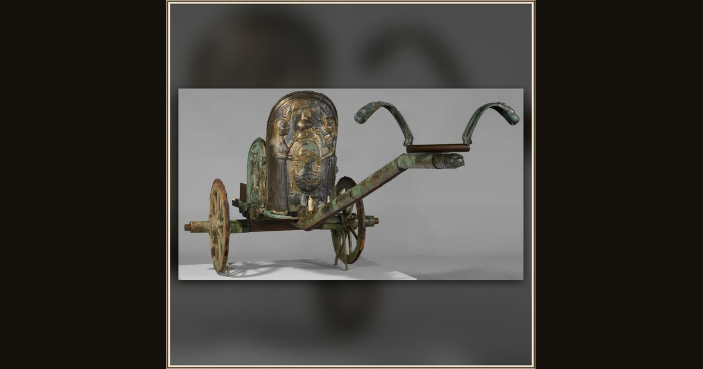

Bronze chariot inlaid with ivory
Etruscan · 2nd quarter of the 6th century BCE · met
An ancient two-wheeled bronze chariot with an ivory-inlaid, figured front, like the car from which Nestor's squire unyokes the horses at his hut (11.620). Explore its place in Homer's Iliad, Book XI, line 619.